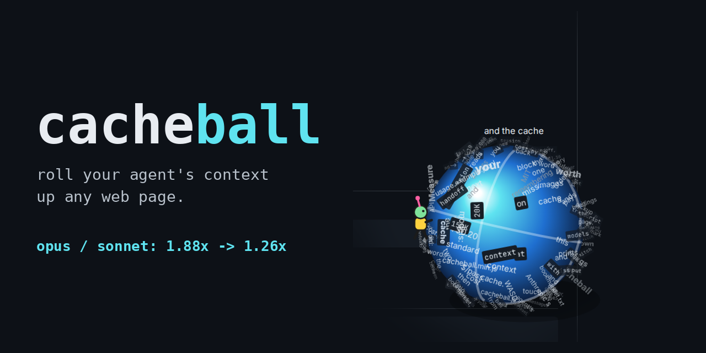

cacheball
Roll your agent's context up any web page. Every word you pick up grows the ball, and the ball is what the next turn re-reads from cache.
Cache reads cost $0.20 per 1M on both Sonnet 5.5 and Opus 5.5. So the bigger the ball gets, the smaller the gap between the two models:
| context in cache | Sonnet 5.5 / turn | Opus 5.5 / turn | Opus / Sonnet |
|---|---|---|---|
| 20K | $0.033 | $0.062 | 1.88x |
| 150K | $0.059 | $0.088 | 1.49x |
| 400K | $0.109 | $0.138 | 1.26x |
The counter in the corner shows that ratio live while you roll.
Run it
Open any page, this README included, and paste cacheball.js into the browser console. Or save bookmarklet.txt as a bookmark and click it on any page.
| input | what it does |
|---|---|
| mouse, touch | roll toward the pointer |
| arrows, WASD | roll |
Enter | hand off early and see your result |
R | roll again from the result card |
C | copy your result |
M | mute |
Esc | quit and put every word back |
Small words first. Big headings and images stay put until the ball is big enough to take them. Stop for 5 seconds and the cache goes cold: the next pickup pays a cache miss.
Missions and the ending
Eight missions run while you roll: 25 words, a lucky word, a x10 combo, two cache sizes, one heading or image, 20 seconds with a warm cache and a clear page. The cache sizes scale with the page you play on.
Clear 97% of the page and the last words fly into the ball on their own. Then the ball collapses into a 20K handoff.md and you get a result card: words, time, context, cache misses, how far opus / sonnet dropped and a rank from S to C. S means a cleared page, all eight missions and zero cache misses.
Measure your own logs
cost.py reads one JSON line per Messages API call and prints $/turn and $/pass per model.
python cost.py usage.example.jsonl
Read it in this order: the $/turn ratio, the avg turns ratio, then $/pass.
Rules worth remembering
switching models mid-session -> new session + handoff, never the transcript switch at 300K context -> 300,000 x $5 / 1M = $1.50 just to re-cache same switch with 20K handoff -> $0.10 one cache miss at 150K -> $0.38 Sonnet / $0.75 Opus
Prices are Anthropic's standard API rates as of October 3, 2026.